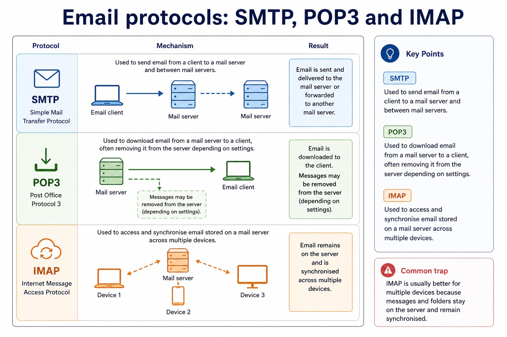
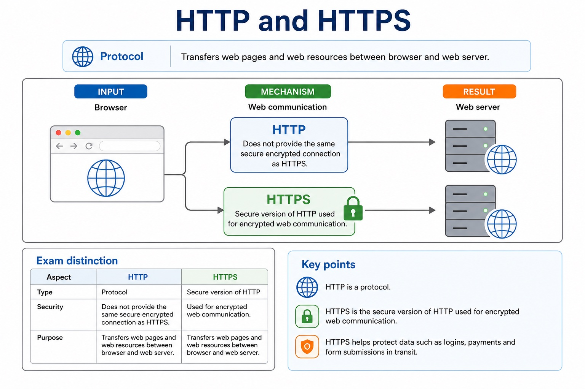
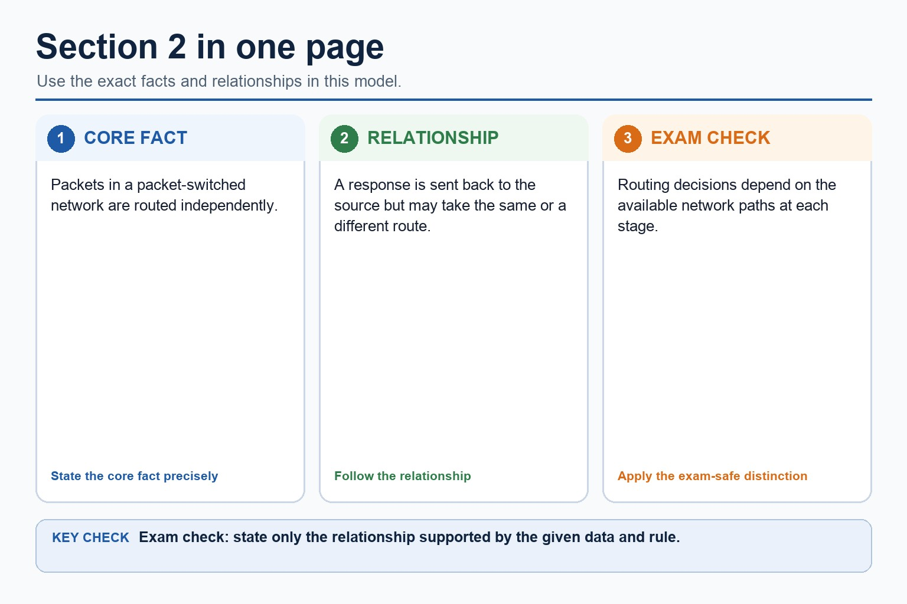
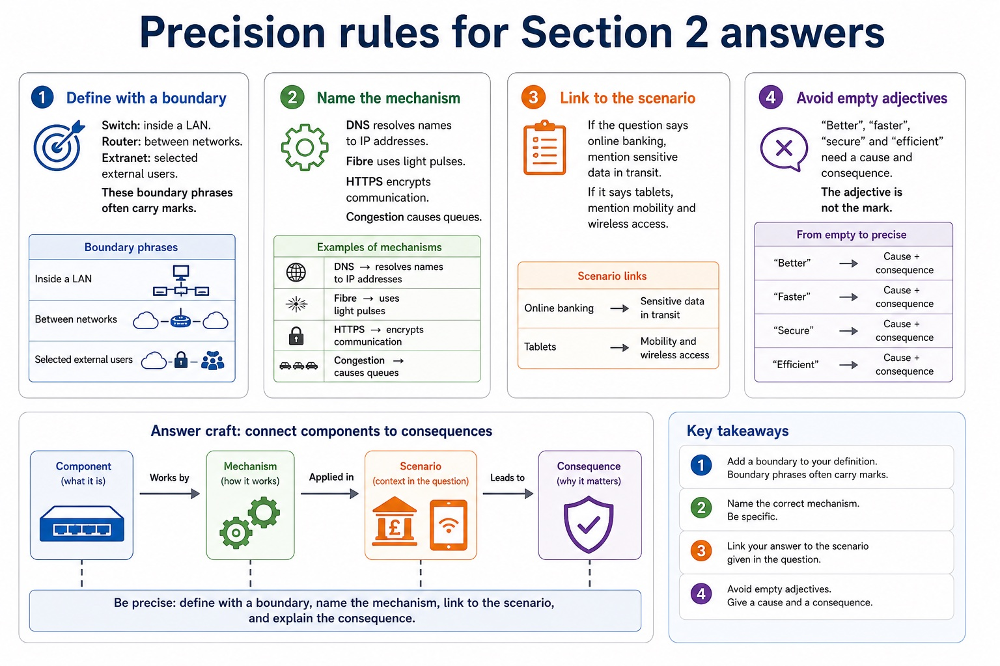

Cambridge AS9618 | Paper 1 | Section 2: Communication
IP addressing, subnetting, URLs and DNS
Flexible-depth lesson
S2.15, S2.16 | Learn from the diagrams, test the method, then choose the practice you need.
Choose a Quick, Full or Deep route
Quick route
Use the diagnostic, learning objectives, first worked example and foundation question. Stop once the learner can explain the central distinction accurately.
Full route
Use every knowledge-point material set, the worked method, the terminology check and all questions.
Deep route
Add the prerequisite refresher, ask learners to connect the concept checklist, discuss the labelled extension and complete a transfer question without a model answer.
Part 1 | optional depth
Prerequisite knowledge and quick diagnostic
Recall S2.15 before starting this lesson.
Give one accurate definition or method step before continuing. If it is missing, revisit only that prerequisite.
Open optional prerequisite refresher
IPv4 is 32-bit and IPv6 is 128-bit. An address is associated with a network interface on a network. Private addressing reduces direct public reachability but does not guarantee security.
Explain IP-address use, including IPv4/IPv6 format, subnetting, device association, public/private and static/dynamic addresses, and security implications.
Part 2 | knowledge-point material sets
Learn each point through visuals
Follow the map, the three-part explanation and the concrete cue. Open precise wording only after the idea is clear.
Open the concept checklist and choose what to teach
IPv6
128-bit
subnetting
network interface
public address
private address
static addresses
dynamic addresses
does not guarantee security
Uniform Resource Locator
scheme
domain name
path
DNS resolves
IP address
WWW resource
01
S2.15 · concept
IPv4 and IPv6 addresses
Concept map
IPv432-bitIPv6128-bitsubnettingnetwork interfacepublic addressprivate addressstatic addressesdynamic addressesdoes not guarantee security
See how it works
MeaningPrivate addressing reduces direct public reachability but does not guarantee security
MechanismAn address is associated with a network interface on a network
ConsequenceIPv4 is 32-bit and IPv6 is 128-bit
Open precise syllabus wording
Explain IP-address use, including IPv4/IPv6 format, subnetting, device association, public/private and static/dynamic addresses, and security implications.
IPv4 is 32-bit and IPv6 is 128-bit. An address is associated with a network interface on a network. Private addressing reduces direct public reachability but does not guarantee security.
02
S2.16 · concept
Uniform Resource Locator · Scheme · Domain name · Path
MeaningA URL may contain scheme, domain, optional port, path and optional query/fragment
Mechanismit does not resolve the path or store the resource
ConsequenceDNS resolves the domain to an IP address, while the remaining URL components identify the required resource
S2.16 diagrams
1 / 5
01
Comparison · 1 of 5
URL components
Open text transcript
https://www.example.org/resources/page.html
Protocol / scheme https tells the browser which communication protocol to use.
Domain name www.example.org is resolved by DNS to an IP address.
Path /resources/page.html identifies the resource on the server.
02
Process · 2 of 5
From a URL to a packet on the local link
Open text transcript
DNS resolves a domain name to an IP address; it does not return a MAC address.
The network-layer packet header contains the destination IP address of the endpoint.
For one local hop, a link-layer frame contains the IP packet and a destination MAC address.
The destination IP and destination MAC belong to different encapsulation headers.
03
Diagram · 3 of 5
DNS: name to IP address
Open text transcript
1. URL entered The user enters a URL containing a domain name.
2. DNS lookup The device asks a DNS server to resolve the domain name.
3. IP returned The DNS server returns the IP address for that domain name.
4. Packets sent Packets can now be addressed and routed to the web server.
Common error
DNS failure may stop a domain name working even if the server is still reachable by IP address.
04
Diagram · 4 of 5
IP address vs MAC address
Open text transcript
IP and MAC addresses work together at different layers; they are not an either-or choice.
The destination IP identifies the endpoint for end-to-end packet delivery.
The destination MAC identifies the receiving interface for one local-link frame.
On a routed path, the frame normally targets the next-hop router MAC while the packet retains the remote destination IP.
05
Comparison · 5 of 5
Routers: forwarding between networks
Open text transcript
A router connects different networks and forwards packets towards their destination.
Uses: IP addresses and routing information to choose a path.
Common role: connects a LAN to the internet or to another network.
Careful wording: a router does not simply "make WiFi". Some home boxes combine router and access point functions, but the jobs are distinct.
Between networks
LAN - router - internet / WAN
Inside the LAN, MAC-address forwarding matters. Between networks, IP-address routing matters.
Open precise syllabus wording
Explain how a URL locates a WWW resource and the role of DNS.
A URL may contain scheme, domain, optional port, path and optional query/fragment. DNS resolves the domain name to an IP address; it does not resolve the path or store the resource.
Supporting diagram library
1 / 6
01
Diagram · 1 of 6
5-minute mini assessment
Open text transcript
Monthly checkpoint
Use this as a short checkpoint before moving to named protocols. Expand the answer key after attempting.
Explain why DNS is needed when a user enters a URL.
State one difference between an IP address and a MAC address.
Identify the domain name in https://store.example.com/products/item7 .
1: DNS resolves the domain name in the URL to an IP address so packets can be routed to the server.
2: IP is a logical network address that can change; MAC is a hardware/interface address used locally.
3: store.example.com .
02
Diagram · 2 of 6
Email protocols: SMTP, POP3 and IMAP

Open text transcript
Used to send email from a client to a mail server and between mail servers.
Used to download email from a mail server to a client, often removing it from the server depending on settings.
Used to access and synchronise email stored on a mail server across multiple devices.
Common error
IMAP is usually better for multiple devices because messages and folders stay on the server and remain synchronised.
03
Diagram · 3 of 6
FTP for file transfer
Open text transcript
FTP: File Transfer Protocol
FTP is used to transfer files between a client and a server, such as uploading website files or downloading files from a file server.
Do not use FTP as a generic answer for “anything on the internet”. It is specifically about file transfer.
04
Diagram · 4 of 6
HTTP and HTTPS

Open text transcript
Protocol
Exam distinction
Transfers web pages and web resources between browser and web server.
Does not provide the same secure encrypted connection as HTTPS.
Secure version of HTTP used for encrypted web communication.
Helps protect data such as logins, payments and form submissions in transit.
05
Diagram · 5 of 6
Section 2 in one page

Open text transcript
Packets in a packet-switched network are routed independently.
A response is sent back to the source but may take the same or a different route.
Routing decisions depend on the available network paths at each stage.
06
Diagram · 6 of 6
Precision rules for Section 2 answers

Open text transcript
Answer craft
1. Define with a boundary
Switch: inside a LAN. Router: between networks. Extranet: selected external users. These boundary phrases often carry marks.
2. Name the mechanism
DNS resolves names to IP addresses. Fibre uses light pulses. HTTPS encrypts communication. Congestion causes queues.
3. Link to the scenario
If the question says online banking, mention sensitive data in transit. If it says tablets, mention mobility and wireless access.
4. Avoid empty adjectives
Apply the idea
Worked method
01Trace a school request
02Two stations sense an idle cable
036 Mbit/s video on 4 Mbit/s link
04Separate infrastructure from service
05Locate one resource on a school web server
06A laptop sends a frame through its wireless interface to an access point.
Open precise terminology and exam facts
IPv4 is 32-bit and IPv6 is 128-bit. An address is associated with a network interface on a network. Private addressing reduces direct public reachability but does not guarantee security.
A URL may contain scheme, domain, optional port, path and optional query/fragment. DNS resolves the domain name to an IP address; it does not resolve the path or store the resource.
LAN hardware includes a switch, server, NIC/WNIC, WAP, cables, bridge and repeater. A server provides network services. A NIC/WNIC connects a device by cable or wirelessly; a WAP connects wireless devices to a wired LAN. A switch forwards frames within a LAN, a bridge connects LAN segments, a repeater regenerates a weakened signal, and cables carry signals.
A router connects different networks and forwards packets using destination IP addresses and stored routing information. It is not a replacement name for a switch: the two devices make forwarding decisions at different scopes.
After a collision, stations stop transmitting, send/recognise a jam signal, wait for different random backoff periods and retry. The random delay reduces the chance of another simultaneous attempt.
A URL locates a WWW resource: DNS resolves the domain to an IP address, while the remaining URL components identify the required resource.
Bit streaming delivers media progressively so playback can begin before the whole file arrives. Real-time streaming carries a live event with minimal delay; on-demand streaming sends stored content selected by the user.
Bit rate is the number of bits transmitted each second. Available broadband speed must normally exceed the media bit rate and absorb variation; otherwise the player buffers, lowers quality or pauses. A buffer stores arriving data temporarily.
The internet is the global network infrastructure that interconnects networks and carries many services. The World Wide Web is one service that uses the internet to provide linked resources accessed with web protocols and browsers.
Internet hardware includes routers and transmission links that forward data between networks. Web servers store or generate web resources, while clients request those resources; the WWW is therefore not a synonym for all internet services.
A modem converts signals into a form suitable for the access link and back again. Internet-supporting connections include the PSTN (Public Switched Telephone Network), a dedicated line and a cell phone network or cellular phone network. Each has different sharing, mobility and availability characteristics.
When describing an internet connection, follow the path from the end device through its NIC, LAN switch or access point, router and access link. Name each device only for the job it performs.
Beyond syllabus / 延伸知识（不要求背诵）
real networks organise communication in layers so that hardware, addressing and application protocols can change independently.
Part 3 | select by learner need
Practice by question type
applyrecallfoundation2 marks
Question 1. What is the purpose of subnetting?
Show answer and marking guidance
Answer: To divide a network into logical subnetworks and identify which subnet an address belongs to.
Marking guidance: Award one mark for each distinct, technically accurate point or method step.
Common error: For the command word apply, perform that exact action; do not replace it with an unrelated fact.
explainexplainapplication2 marks
Question 2. Why might a server use a static IP address?
Show answer and marking guidance
Answer: Clients/DNS need a predictable address for the service.
Marking guidance: Award one mark for each distinct, technically accurate point or method step.
Common error: Do not repeat the same point in different words; each mark needs a separate idea or method step.
applyrecalltransfer2 marks
Question 3. What is the role of a NIC?
Show answer and marking guidance
Answer: It provides the device's network interface for sending and receiving data.
Marking guidance: Award one mark for each distinct, technically accurate point or method step.
Common error: Do not copy the worked example unchanged; transfer the method and check it against the new context.
Related past-paper indexes
Reference
Marks
Command word
Question type
9618/11/W/25 Q7(c)
4
complete
recall
9618/12/S/25 Q6(d)
4
complete
recall
9618/11/W/25 Q7(a)
2
complete
recall
9618/11/W/25 Q7(b)
2
complete
recall
Index only: Cambridge question and mark-scheme wording is not reproduced on this public course page.
Part 4 | close when ready
Summary and exam reminders
Summary
Define ip addressing, subnetting, urls and dns with the exact technical vocabulary expected by the syllabus.
Use the lesson method on a fresh context and show the intermediate decision, representation or calculation.
Match the shape of the answer to the command word and the available marks.
Check the final answer against the scenario instead of repeating a memorised sentence.
Common error to correct
Students often confuse bandwidth with speed in every sense. Correction: bandwidth is capacity; latency and congestion also affect perceived performance.
Exam technique
Follow the command word: state gives a fact; explain links a cause to a consequence; compare covers both sides.
Match the number of independent points or method steps to the available marks.
For ip addressing, subnetting, urls and dns, use the exact technical term before applying it to the scenario.